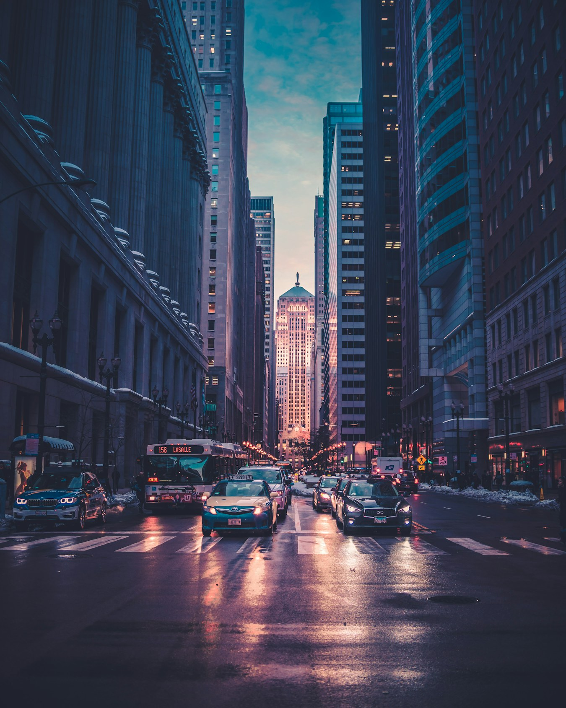

Still Frame — Portfolio.exe
Still Frame — Portfolio.exe STILL FRAME
Still
Frame.
城市摄影档案
沿一条街走到天黑。把雨后的反光、楼群间的日落和桥下最后一道余晖收进同一卷。

C:\Studio\Film3 files
 底片索引 — FilmStill Frame — Portfolio.exe
底片索引 — FilmStill Frame — Portfolio.exe城市摄影档案
沿一条街走到天黑。把雨后的反光、楼群间的日落和桥下最后一道余晖收进同一卷。

底片索引 — Film 电子音乐
电子音乐